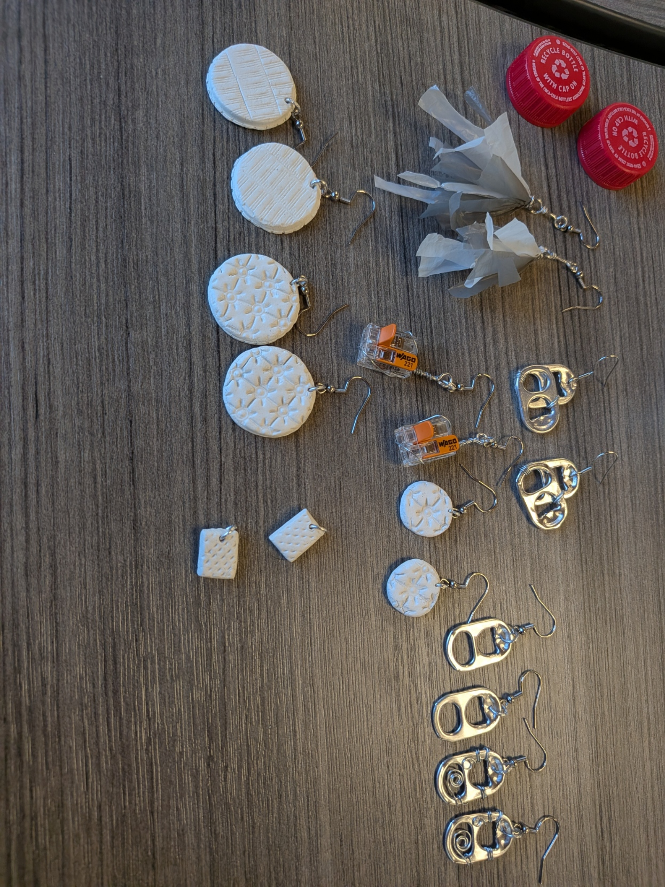

Project Name: One Man's Trash...
Project description: Creating jewelry from
non-recyclable materials and found objects to
represent issues in pollution, climate change, and
the future of human health. Many people don't realize
that microplastics and chemicals get absorbed into soil,
contaminating our food and water resources, eventually
leading to serious health risks in humans and animals.
